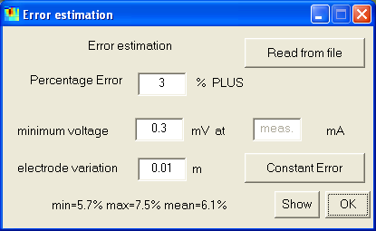
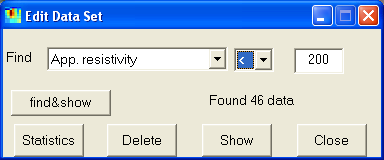

| Knowing the accuracy of the data points can significantly increase the
interpretation of geophysical data. If errors (in terms of standard deviations)
are not measured, it is possible to estimate. The (relative) data erros
are supposed to consist of three parts, a percentage error plus an voltage
error considering the limited accuracy of the field equipment plus errors
due to varying electrode positions. The voltage error is divided by the driving current and multiplicated by the configuration factor giving large errors for high k-values (such as dipole-dipole) and small errors for low k-values (such as wenner). If no errors are given in the data file, an error estimation dialog is called. It is also possible to assume equal errors for the data or to read the standard deviation from text file. |
 |
The Edit Data GUI can be used for prepocessing data. The data can be selected according the relations >,< and = to a defined quantity of the following fields:
|

|
The button "find&show" shows the found data with red, the others
are blue.
The "Statistics" button provides a histogram of the selected field.
By clicking on "Delete" the selected (red) data points are deleted
from the data set.
"Show" displays the selected field, and "Close" exits the
GUI.
For modelling studies, it is possible to create data sets with the following
dialog.
The number of electrodes are required as well as the position of the first electrode
and the electrode spacing. Surface arrangements (Wenner, Schlumberger, Pole-Pole,
Pole-Dipole, Dipole-Dipole), surface-to-borehole and cross-borehole measurements
can be simulated using the Create and Add button and viewed by the show button.
Hotkey: Shift+W
The data are exported in RES2DINV format using the arbitrary electrode position feature (type=11).
Hotkey: Shift+E
Sometimes (e.g. when interactively modelling) it is useful to call forward calculation manually. The resulting forward response is displayed.
Hotkey: Shift+F